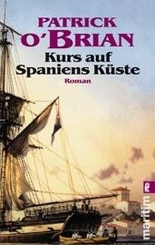
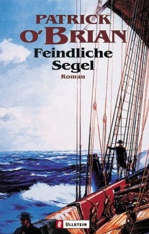
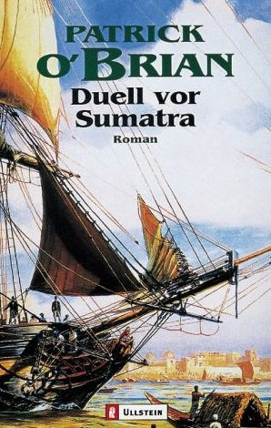
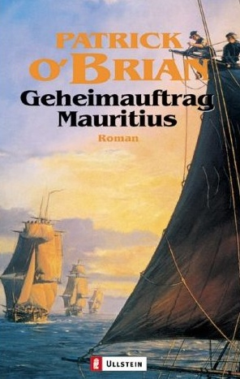

cc 2001 - 2010 Benjamin Birkenhake Digital ist besser
Die Aubrey und Maturin Serie ist eine zwanzig Bände umfassende Romanreihe des englischen Autors Patrick O'Brian, deren namengebende Hauptfiguren Captain "Luck" Jack Aubrey und dessen Schiffsarzt und Freund Stephen Maturin sind. Die Serie spielt in der sogenannten Nelson-Ära zur Zeit der naopleonischen Kriege und handelt in erster Linie von den Abenteuer ihrer Protagonisten während des Seekrieges.
Die Reihe bildes das Patrick O'Brian Opus Magnus und entstand über einen Zeitraum von 30 Jahren, von 1969 bis 1999. In die Figur des Stephen Maturin hat Patrick O'Brian Erfahrungen aus seiner Zeit als Geheimagent während des Zweiten Weltkrieges hat einfließen
Die Bücher bilden die Grundlage für die Hollywood-Verfilmung "Master and Commander" durch Peter Weir.
   
Kommentare